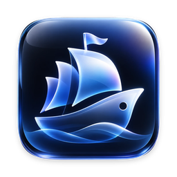

Toplet
A little ship for your Mac. An open-source living notch companion: useful daily tools, a small ship with personality, and nothing leaves your Mac unless you ask.
Free and open source under GPL-3.0 · macOS 14.6 or later · Signed downloads are coming; today you build it in a few minutes.
What it does today
Music in the notch
Play, pause and skip for Apple Music, Spotify and other players, with optional lyrics that stay under the notch.
AI usage limits
Your Claude, Codex and Cursor plan limits in plain words: “Session limit · Resets in 1 hr 45 min · 47%”. Pin one under the notch.
Timers, alarms and world clocks
12- or 24-hour time, alarms that open the notch when they ring, and the time in the cities you care about.
A quick game
Pairs, Tic-Tac-Toe and Lights Out, right in the notch, for a short break.
Useful system glances
Battery, Bluetooth devices, downloads, Focus, screen recording, a file shelf with AirDrop, clipboard history and more.
Coding agents
Follow Claude Code and Codex sessions and answer their permission requests from the notch.
The full, honest feature list (including what is still partial) is in FEATURES.md.
Private by design
- No account, no subscription, no ads, no analytics.
- Everything runs on your Mac. Features that use the internet (weather, lyrics, AI plan limits) say so and can be turned off.
- Toplet reads other apps' sign-ins only to show your limits, and never changes them.
Install
Works on macOS 14.6 or later. Until signed releases are available, build it from source with the Xcode Command Line Tools:
git clone https://github.com/harikiran138/Toplet.git
cd Toplet
./local/build.sh release
./local/install.sh
open ~/Applications/Toplet.appReleases and changes: GitHub Releases · Changelog
Developers, come aboard
Toplet is built in Swift, SwiftUI and AppKit, and every kind of help is welcome: code, design, ship characters, accessibility, translations, testing and docs. Start with the first-contribution guide and the roadmap.